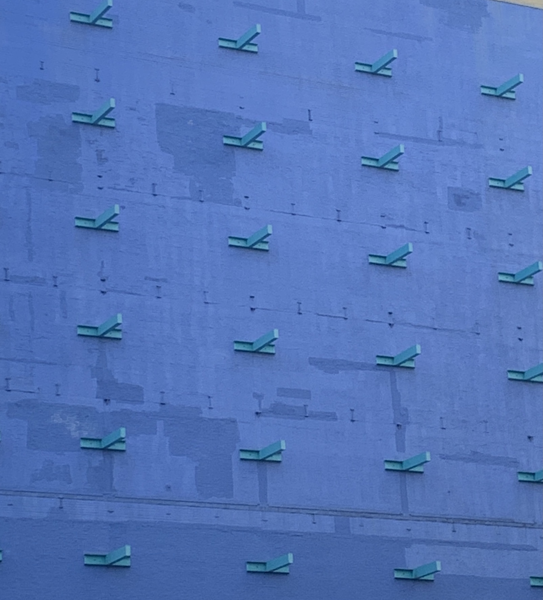
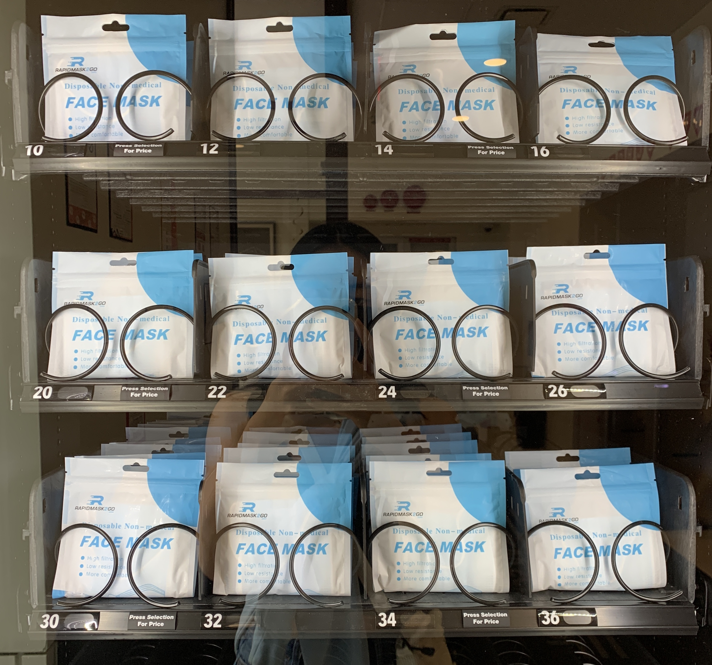
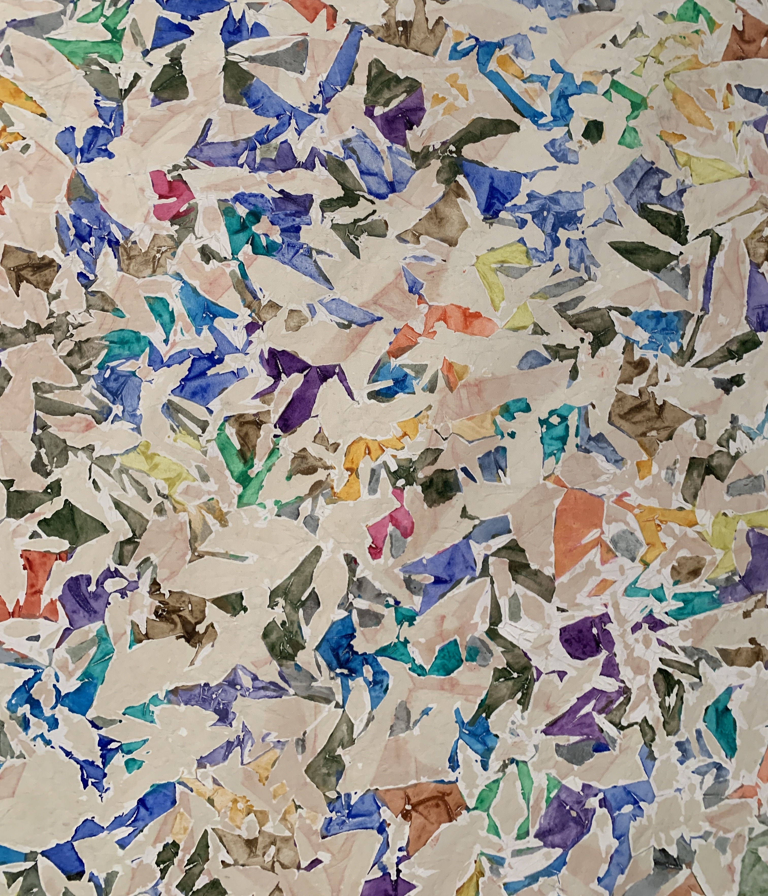
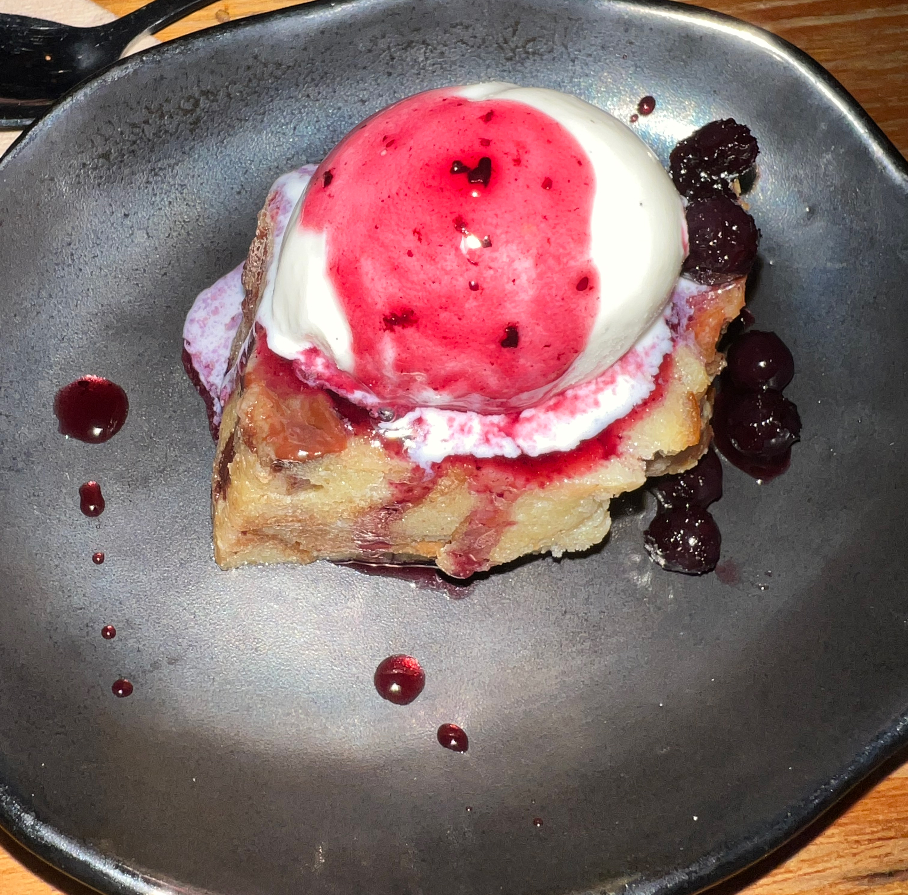

Olivia Hu
Core 2: Interaction Lab
HW Three
Pretty Skies
in New Jersey
In New York City, it is hard to see sunsets and the sky fully.
When I go back home, every sunset or sky in general is more special
and I appreciate them more as I do not see them very often.
Patterns
of the City
in New York
Since transitioning to living in New York City, I took photos of patterns that remind me and are commonly seen throughout my trips in the city.



Food Fortune
in New York (of course)
Ever since August 2021, my visits to restaurants and cafes have increased along with my spending. I appreciate exploring the wide array of different cultures and food here in the city.
